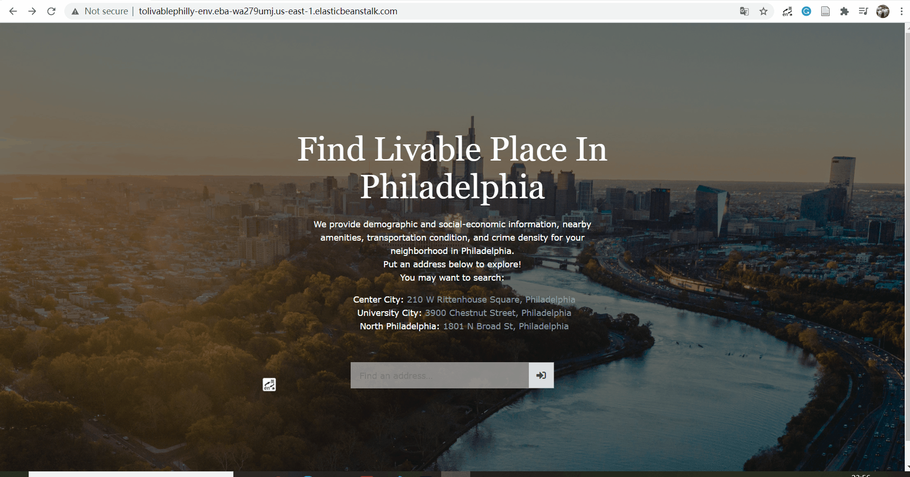
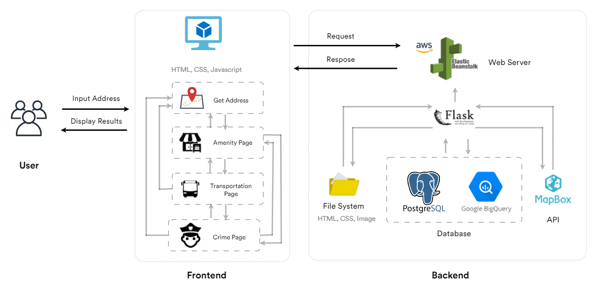

Exploring Urban Habitat Suitability: Harnessing Data-Driven Insights through LivabilityXplorer
LivabilityXplorer is the final project I developed with Jacey Chang under the guidance of Prof. Andy Eschbacher for course Geospatial Cloud Computing & Visualization in 2021 Spring. In the search for the perfect place to call home, individuals often face a multitude of challenges. Determining which neighborhoods align with their preferences and requirements can be a daunting task. Recognizing this need, we present LivabilityXplorer, a web application designed and developed to provide comprehensive livability analysis for any place in Philadelphia. By integrating affordability, diversity, amenity, transportation, and crime data, LivabilityXplorer offers users the ability to evaluate the livability of different locations in the city.
Key Features
LivabilityXplorer offers several distinctive features aimed at facilitating comprehensive livability analysis at multiple levels.
Comprehensive Affordability Analysis: Provides housing average rent data specific to a chosen location, allows users to explore how affordable different neighborhoods are within Philadelphia.
Diversity Insights: Leveraging demographic data garnered from Census records enables users to evaluate racial composition and education levels within specific areas.
Amenity Assessment: By utilizing OpenStreetMap POI data combined with geospatial analysis techniques implemented through Mapbox integration, LivabilityXplorer offers users a holistic understanding of available amenities such as grocery stores, schools, supermarkets within their desired locations.

Transportation Evaluation: Generates 10/20/30 minutes isochrone maps based on walking/cycling/driving, allows individuals to assess transportation accessibility within customizable time frames around their chosen location.
Crime Visualization: Utilizing shooting incident heat maps derived from relevant crime statistics contributes valuable insights into neighborhood safety profiles.

Data Collection and Integration
LivabilityXplorer integrates diverse datasets to evaluate and analyze multiple aspects of livability, including affordability, diversity, amenity availability, transportation accessibility, and crime rates in various areas of Philadelphia.
Crime Data: The crime data, specifically shooting victim data, is sourced from Carto. The specific data source for shooting victim information can be accessed through the following link: https://phl.carto.com/api/v2/sql?q=SELECT+*+FROM+shootings&filename=shootings&format=geojson&skipfields=cartodb_id. This data helps evaluate the safety aspect of different neighborhoods.
Public Transportation Stops Data: The public transportation stops data is sourced from SEPTA. The dataset contains information about various transit stops and routes within the city. The actual data source can be accessed through this link: https://services2.arcgis.com/9U43PSoL47wawX5S/arcgis/rest/services/Spring_2019_Stops_By_Route/FeatureServer/0/query?where=1%3D1&outFields=*&outSR=4326&f=json. This data helps assess transportation accessibility in different areas.
Amenities Data: Basic demographic and socioeconomic information such as race demographics, age distribution, economics, and housing values come from ACS (American Community Survey) 2018 Census data. This dataset provides essential socioeconomic indicators for different neighborhoods in Philadelphia. The specific query for this data is performed using BigQuery.
System Architecture
Use Case Scenarios
Facilitating Housing Decision-Making Processes
One of the key challenges for individuals and families searching for housing in Philadelphia is assessing affordability, amenities, safety and transportation accessibility. LivabilityXplorer offers a valuable solution by providing comprehensive affordability analysis, including housing average rent insights. Users can input their desired location and access data on average rental prices, helping them make informed decisions about where to live based on their budget. Additionally, the application incorporates amenity mapping, allowing users to explore nearby grocery stores, schools, and supermarkets. Transportation accessibility plays a crucial role as well, with LivabilityXplorer enabling users to visualize isochrone analysis by walking, cycling, or driving timescales. These features combined empower users to evaluate various factors influencing their housing choices and improve decision-making processes.
Supporting Equitable Community Development Initiatives
Urban planners and policymakers often strive for equitable community development projects that address diverse needs within Philadelphia neighborhoods. LivabilityXplorer plays a significant role in supporting such initiatives by providing valuable insights into diversity metrics and crime visualization. The application incorporates demographic data on race and education level to help identify areas with diverse populations or potential disparities in educational opportunities. This information aids policymakers in implementing targeted strategies for fostering inclusivity and equal access in underserved communities.
Furthermore, LivabilityXplorer's crime heatmap visualization provides an understanding of shooting incidents' spatial distribution across Philadelphia's neighborhoods. By identifying high-risk areas with greater clarity through this visualization tool, policymakers can prioritize resources, implement preventive measures, and engage the community in discussions about public safety enhancement efforts.
These use case scenarios demonstrate how LivabilityXplorer goes beyond merely providing data; it translates complex urban information into actionable insights that support decision-making at both individual levels (housing choices) and community-centered levels (equitable development).
Full Code